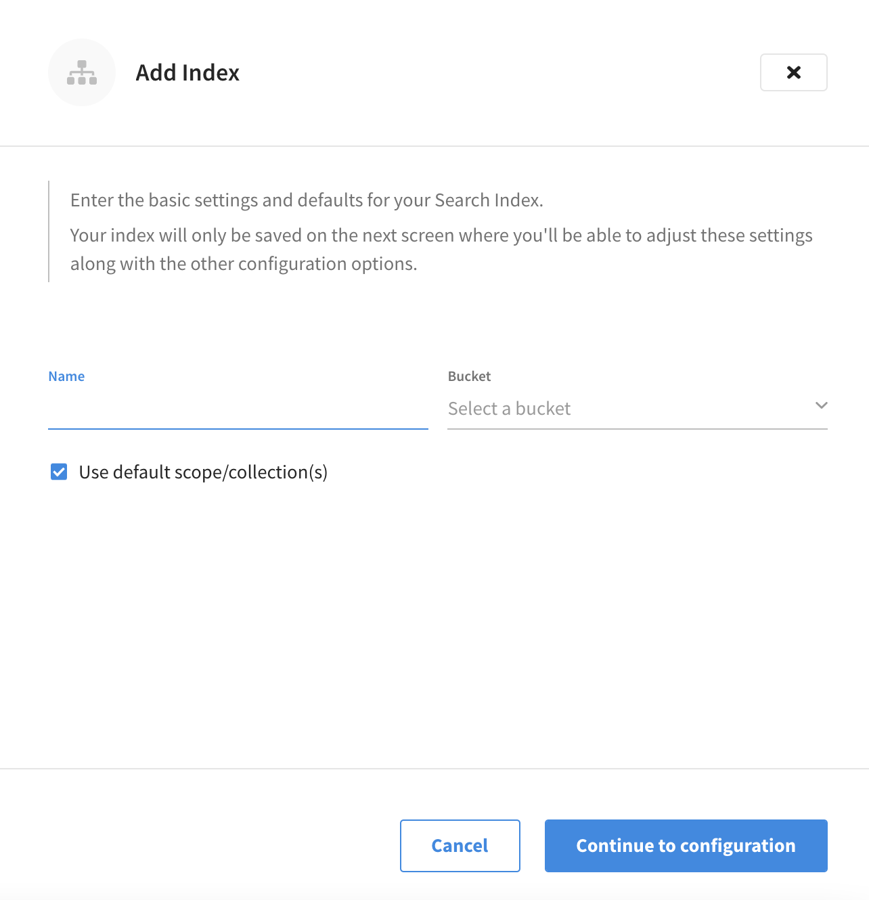
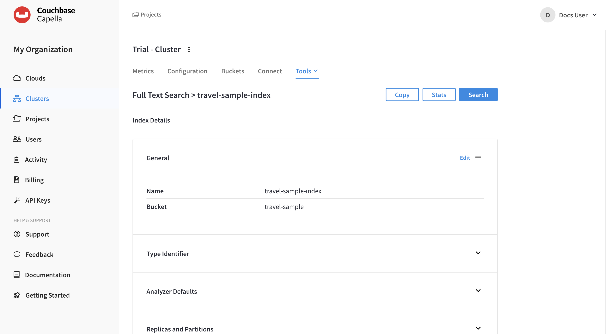
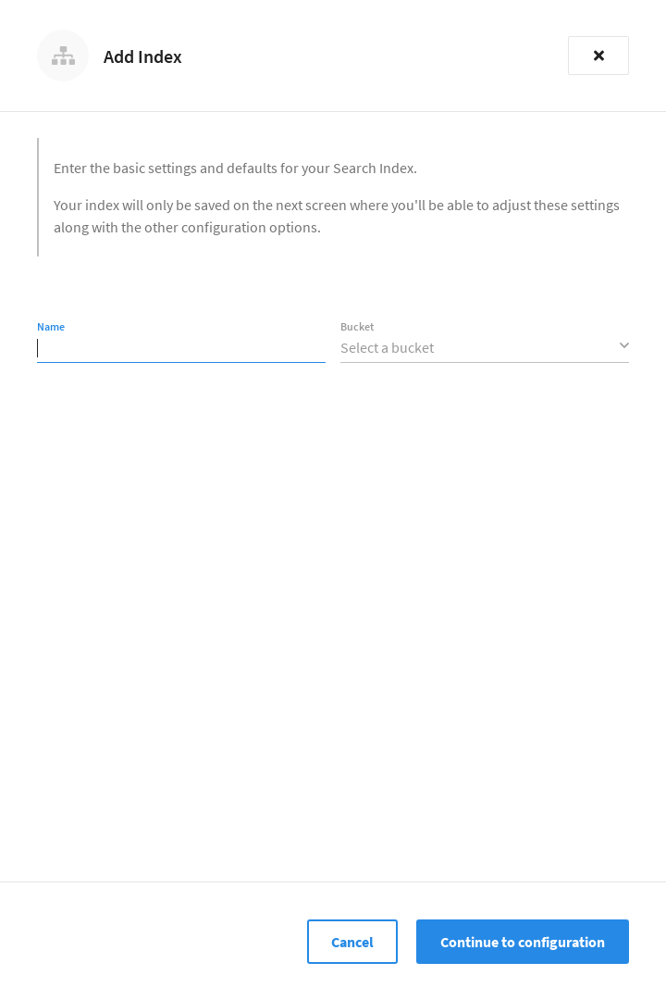
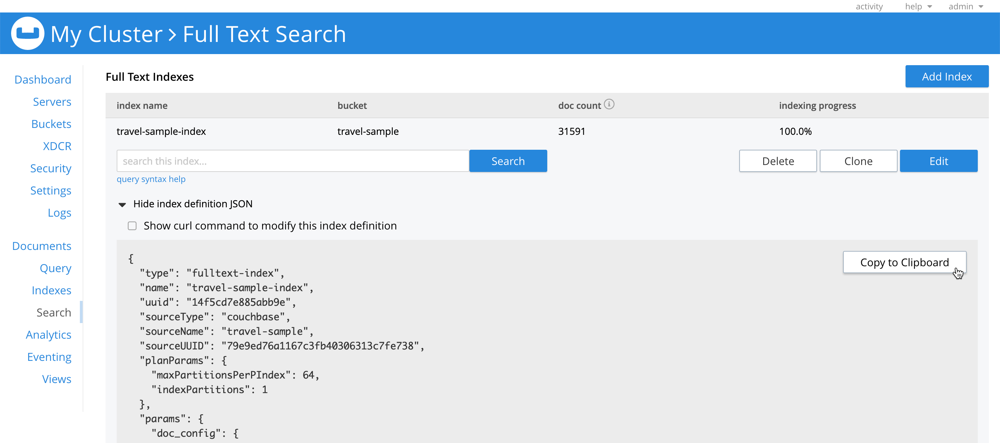
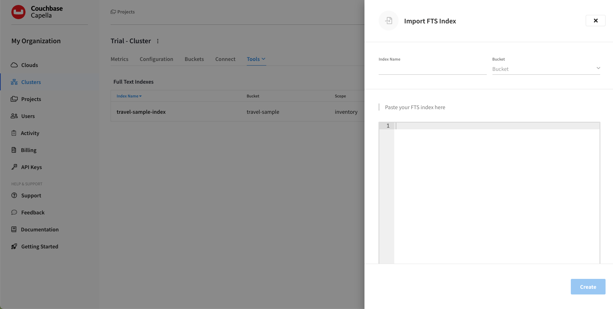

Create Full Text Indexes
Full text searches are supported by specially purposed indexes, which can be created and modified from the Couchbase Capella UI.
Index-creation is configurable, and can be highly selective: documents can be user-grouped into different types (for example, airline documents versus hotel documents), based on the document-IDs or the values of a designated document-field; and each document-type can be assigned its own index-mapping.
Each index-mapping in turn can be assigned its own analyzers, can be applied to a specific subset of document-fields, and can be explicitly included in or excluded from the index.
Create a Full Text Index
| You can also create a Full Text Index by importing a JSON-formatted index definition. This can be helpful if you want to create a new index that is very similar to an existing index, or if you want to re-create an index from another cluster. |
|
Permissions Required
In order to create a Full Text Index via the Capella UI, the following permissions are required:
|
-
Go to the cluster’s Tools > Full Text Search tab.
-
Go to the Clusters tab in the main navigation.
-
Find and click on the cluster that contains the bucket on which you plan to create a Full Text Index.
This opens the cluster with its Metrics tab selected.
-
Click the Tools > Full Text Search tab.
-
-
Click Add Index.
This opens the Add Index fly-out menu.
 -
Specify a name for the index.
In the Name field, enter a unique name for the index. Only alphanumeric characters, hyphens, and underscores are allowed for Full Text Index names. Note also that the first character of the name must be an alphabetic character.
-
Use the Bucket dropdown menu to select the bucket on which the index is to be created.
-
If you want the index to stream data from a non-default scope and/or non-default collection(s) on the source bucket, de-select the Use default scope/collection(s) checkbox.
If you have not yet created collections for your documents, then the Use default scope/collection(s) check box should remain selected as this will ensure that all documents within the bucket’s _defaultcollection are indexed and searchable.This reveals the Scope dropdown menu.
-
Click the Scope dropdown menu and choose the scope you wish to stream data from.
-
-
Click Continue to configuration.
The fly-out menu closes and the index’s configuration screen appears.
 -
Configure the index.
From the index’s configuration page, you can begin configuring various settings for the index. Note that the index can actually be saved as-is at this point, because it is technically valid with just a name and a specified bucket. However, since a default type mapping is not included as part of the configuration, saving the index will not result in any content being indexed (and thus no documents will be returned if you try to perform a search).
You can review the other sections on this page for explanations of the various Full Text Index settings:
-
Once you’re satisfied with the configuration, click Create Index.
The fly-out menu closes and the new index appears in the Full Text Indexes section. Note the percentage figure in the Indexing Progress column. This figure is incremented in correspondence with the build-progress of the index. When 100% is reached, the index build is considered complete. An index can be searched as soon as it’s created, but only partial results can be expected until the index build is complete.
After creating the index, you can return to the index’s configuration page to modify the index’s configuration settings, as well as take actions such as searching the index, monitoring index statistics, and copying the index definition. Refer to the section modify-full-text-index>> for more information.
-
Go to the cluster’s Tools > Full Text Search tab.
-
Go to the Clusters tab in the main navigation.
-
Find and click on the cluster that contains the bucket on which you plan to create a Full Text Index.
This opens the cluster with its Metrics tab selected.
-
Click the Tools > Full Text Search tab.
-
-
Click Add Index.
This opens the Add Index fly-out menu.
 -
Specify a name for the index.
In the Name field, enter a unique name for the index. Only alphanumeric characters, hyphens, and underscores are allowed for Full Text Index names. Note also that the first character of the name must be an alphabetic character.
-
Use the Bucket dropdown menu to select the bucket on which the index is to be created.
-
Click Continue to configuration.
The fly-out menu closes and the index’s configuration screen appears.
-
Configure the index.
From the index’s configuration page, you can begin configuring various settings for the index. Note that the index can actually be saved as-is at this point, because it is technically valid with just a name and a specified bucket. However, since a default type mapping is not included as part of the configuration, saving the index will not result in any content being indexed (and thus no documents will be returned if you try to perform a search).
You can review the other sections on this page for explanations of the various Full Text Index settings:
-
Once you’re satisfied with the configuration, click Create Index.
The fly-out menu closes and the new index appears in the Full Text Indexes section. Note the percentage figure in the Indexing Progress column. This figure is incremented in correspondence with the build-progress of the index. When 100% is reached, the index build is considered complete. An index can be searched as soon as it’s created, but only partial results can be expected until the index build is complete.
After creating the index, you can return to the index’s configuration page to modify the index’s configuration settings, as well as take actions such as searching the index, monitoring index statistics, and copying the index definition. Refer to the section [modify-full-text-index] for more information.
Import a Full Text Index
You can create a Full Text Index by importing a JSON-formatted index definition. This can be helpful if you want to do things like:
-
Clone an index from the same cluster
-
Re-create an index from another cluster, such as another cluster in Couchbase Capella or a self-managed Couchbase Server cluster
|
Permissions Required
To import a Full Text Index using the Couchbase Capella UI, the following permissions are required:
|
-
Go to the cluster’s Tools > Full Text Search tab.
-
Go to the Clusters tab in the main navigation.
-
Find and click on the cluster that contains the bucket on which you plan to import the Full Text Index.
This opens the cluster with its Metrics tab selected.
-
Click the Tools > Full Text Search tab.
-
-
(Optional) Copy the index definition of an existing index.
To copy the definition of an existing index on the cluster, find the index that you wish to copy in the Full Text Indexes section, and click on the index’s name. This opens the index’s configuration page. From there, click Copy Index to Clipboard.
You can also copy an index definition from Couchbase Server. In the Couchbase Web Console, start by going to the Search tab in the left-hand navigation. Find and click on the index that you wish to copy, and in the expanded configuration menu, click Show index definition JSON. Copy the index definition by clicking Copy to Clipboard.
 -
From the Tools > Full Text Search tab, click Import Index.
This opens the Import FTS Index fly-out menu.
 -
Specify a name for the index.
In the Index Name field, enter a unique name for the index. Only alphanumeric characters, hyphens, and underscores are allowed for Full Text Index names. Note also that the first character of the name must be an alphabetic character.
-
Use the Bucket dropdown menu to select the bucket on which the index is to be created.
-
In the code editor field, enter or paste the index definition.
Note that the
"name"and"sourceName"values in any imported index definition will be overridden by what was specified for Index Name and Bucket in the previous steps. -
Once you’re satisfied with the configuration, click Create.
The fly-out menu closes and the new index appears in the Full Text Indexes section. Note the percentage figure in the Indexing Progress column. This figure is incremented in correspondence with the build-progress of the index. When 100% is reached, the index build is considered complete. An index can be searched as soon as it’s created, but only partial results can be expected until the index build is complete.
After importing an index, you can view and modify its configuration from the index’s configuration page.
Specifying Scope/Collection(s)
|
If you are using Couchbase Server 6.6, you can’t specify the scope and collection(s) as this functionality relies on the scopes and collections feature introduced in Couchbase Server 7.0. |
Scopes and collections categorize and organize documents within a bucket. A collection is a data container within a bucket. A scope is a mechanism that groups multiple collections together. To view and modify the specified scope, open the index’s configuration page and under the Index Details section, in the General panel, click Edit. This opens the Edit Index fly-out menu.
The four options provided are the same as those shown during the first part of creating the index:
-
Name: The name of the Full Text Index. Only alphanumeric characters, hyphens, and underscores are allowed. Note also that the first character of the name must be an alphabetic character.
-
Bucket: The bucket used by this index. Clicking the dropdown menu lists all the available options.
-
Use default scope/collection(s): When checked, the default scope/collection(s) are used. When unchecked, the Scope dropdown menu is shown.
If you have not yet created collections for your documents, then the Use default scope/collection(s) check box should remain selected as this will ensure that all documents within the bucket’s _defaultcollection are indexed and searchable. -
Scope: The scope to be used for this index. By default, the
_defaultscope is selected. Clicking the dropdown menu lists all the available options.
After modifying the scope and collection(s) and any other settings, click Update to save the configuration. The fly-out menu closes, and the new configuration is displayed in the General panel.
| After clicking Update the new scopes/collection(s) configuration is only saved in browser memory. To commit the new configuration (along with any other settings modifications), and to begin rebuilding the index, click Save Index at the bottom of the index’s configuration page. |
Specifying Type Identifiers
A type identifier allows the documents in a bucket to be identified by the index according to their type.
|
Permissions Required
In order to specify the type identifier for a Full Text Index via the Capella UI, the following permissions are required:
|
The type identifier can be viewed and modified from the index’s configuration page, under the Index Details section. The type identifier configuration of the current index can be displayed by expanding the Type Identifier panel.
The current type identifier is listed to the left, with the specified value listed to the right.
Clicking Edit Type Identifier opens the Type Identifier fly-out menu.
Three options are provided, each of which gives the index a particular way of determining the type of each document in the bucket:
-
JSON Type Field: The name of a document-field. The value specified for this field is used by the index to determine the type of the document. The default value is
type: meaning that the index searches for a field in each document whose name istype. Each document that contains a field with that name is duly included in the index, with the value of the field specifying the type of the document. Note that the value cannot be an array or JSON object. -
Doc ID up to Separator: The characters in the ID of each document, up to but not including the separator. For example, if the document’s ID is
hotel_10123, the valuehotelis determined by the index to be the type of the document. The value entered into the field should be the separator-character used in the ID: for example,_, if that character is the underscore. -
Doc ID with Regex: A regular expression that is applied by the index to the ID of each document. The resulting value is determined to be the type of the document. (This option may be used when the targeted document-subset contains neither a suitable JSON Type Field nor an ID that follows a naming convention suitable for Doc ID up to Separator.) The value entered into the field should be the regular expression to be used.
After modifying the type identifier and its associated value, click Update Type Identifier to save the configuration. The fly-out menu closes, and the new type identifier configuration is displayed in the Type Identifier panel.
| The new type identifier configuration is only saved in browser memory. To commit the new type identifier configuration (along with any other settings modifications), and to begin rebuilding the index, click Save Index at the bottom of the index’s configuration page. |
Specifying Analyzer Defaults
|
Permissions Required
In order to specify analyzer defaults for a Full Text Index via the Capella UI, the following permissions are required:
|
Analyzer defaults can be viewed and modified from the index’s configuration page, under the Index Details section. The analyzer defaults of the current index can be displayed by expanding the Analyzer Defaults panel.
Clicking Edit Analyzer Defaults opens the Analyzer Defaults fly-out menu.
The following interactive fields are displayed:
-
Default Analyzer: The default analyzer to be used for this bucket. The default value is
standard. Clicking the dropdown menu displays a list of available options. -
Default Date/Time Parser: The default date/time parser to be used for this bucket. The default value is
dateTimeOptional. Clicking the dropdown menu displays a list of available options. -
Store Dynamic Fields: When checked, ensures inclusion of field-content in returned results. When unchecked, no such inclusion occurs.
-
Index Dynamic Fields: When checked, ensures dynamic fields are indexed. When unchecked, they are not indexed.
After modifying the analyzer defaults, click Update Analyzer Defaults to save the configuration. The fly-out menu closes, and the new analyzer defaults are displayed in the Analyzer Defaults panel.
| The new analyzer defaults configuration is only saved in browser memory. To commit the new analyzer defaults (along with any other settings modifications), and to begin rebuilding the index, click Save Index at the bottom of the index’s configuration page. |
Specifying Type Mappings
| Valid type mapping are required when created full text indexes |
Whereas a type identifer tells the index how to determine the position in each document of the characters that specify the document’s type, a type mapping specifies the characters themselves.
Thus, if Doc ID up to separator is used as a type identifier, and the underscore is specified as the separator-character, a type mapping of hotel ensures that hotel_10123, rather than airline_10, is indexed.
|
Permissions Required
In order to specify a type mapping for a Full Text Index via the Capella UI, the following permissions are required:
|
Type mappings can be viewed and modified from the index’s configuration page, under the Index Settings section. Any type mappings that are configured for the current index can be viewed by expanding the Type Mappings panel. If no type mappings have been configured for the index, the Type Mappings panel will be empty.

Clicking Add Mapping opens the Add Mapping fly-out menu.

When the Enabled checkbox is selected, documents that correspond to the type mapping are included in the index. Conversely, if the Enabled checkbox is unselected, documents that correspond to the type mapping are not included in the index.
To specify a type mapping, enter an appropriate string (for example, hotel) into the Name field.
Note the Only index specified fields checkbox: if this is checked, only user-specified fields from the document are included in the index.
(For an example, refer to the section Specifying Fields.)
Each type mapping can be either dynamic, meaning that all fields are considered available for indexing; or only index specified fields, meaning that only fields specified by the user are indexed. Leaving Only index specified fields unselected means that the type mapping will be dynamic. For information on how values are data-typed when dynamic mapping is specified, refer to the section Document-Fields and Data-Types.
Optionally, the Default Analyzer dropdown menu can be used to specify an analyzer for the type mapping.
For all queries that do indeed support use of an analyzer, the specified analyzer will be applied, rather than the default analyzer (which is itself specified in the Analyzer Defaults panel, as described in the Specifying Analyzer Defaults section).
The default value, inherit, means that the type mapping inherits the default analyzer.
|
Custom analyzers can be created and stored for the index that is being defined (refer to the section Creating Analyzers). On creation, all custom analyzers are available for association with a type mapping, and so appear in the dropdown menu shown above. Additional information on analyzers can also be found on the page server:fts:fts-using-analyzers.adoc in the Couchbase Server documentation. |
Once you’re satisfied with the configuration, click Create Mapping to save the type mapping. The fly-out menu closes and the new type mapping is displayed in the Type Mappings panel as follows:
| The new type mapping is only saved in browser memory. To commit the new type mapping (along with any other settings modifications), and to begin rebuilding the index, click Save Index at the bottom of the index’s configuration page. |
After creating a type mapping, you can click on its associated vertical ellipses to display a dropdown menu that contains additional options.
The Edit Mapping and Delete Type Mapping options can be used to correspondingly edit or delete the type mapping. The Insert Child Mapping and Insert Child Field options can be used to specify fields.
Specifying Fields
A Full Text Index can be defined not only to include (or exclude) documents of a certain type, but also to include (or exclude) specified fields within each of the typed documents.
|
Permissions Required
In order to specify fields (inserting a child mapping and inserting a child field) for a Full Text Index via the Capella UI, the following permissions are required:
|
To specify a field, start by clicking the vertical ellipses next to the desired type mapping.
In the menu that appears, select one of the following options for specifying fields:
-
Insert Child Mapping
Refer to the section Inserting a Child Mapping.
-
Insert Child Field
Refer to the section Inserting a Child Field.
Inserting a Child Mapping
When specifying fields, the Insert Child Mapping option allows you to specify a document-field whose value is a JSON object. Selecting this option opens the Add Child Mapping fly-out menu:
The interactive fields and checkboxes are:
-
Enabled: When this checkbox is selected, documents that correspond to the child mapping are included in the index. When this checkbox is unselected, documents that correspond to the child mapping are not included in the index.
-
Name: The name of a field whose value is a JSON object.
-
Default Analyzer: Optionally specify an analyzer for the child mapping. For all queries that do indeed support use of an analyzer, the specified analyzer will be applied, rather than the default analyzer (which is itself specified in the Analyzer Defaults panel, as described in the Specifying Analyzer Defaults section). The default value,
inherit, means that the type mapping inherits the default analyzer. -
Only index specified fields: When checked, only fields explicitly specified are added to the index. Note that the JSON object specified as the value for Name has multiple fields of its own. Checking this box ensures that all or a subset of these can be selected for indexing.
Once you’re satisfied with the configuration, click Create Child Mapping to save the child mapping.
The fly-out menu closes and the new child mapping is displayed as part of the parent type mapping as follows (note that reviews is a field within the hotel-type documents of the travel-sample bucket whose value is a JSON object):
| The new child mapping is only saved in browser memory. To commit the new child mapping (along with any other settings modifications), and to begin rebuilding the index, click Save Index at the bottom of the index’s configuration page. |
After creating a child mapping, you can click on its associated vertical ellipses to display a dropdown menu that contains additional options.
The Edit Mapping and Delete Type Mapping options can be used to correspondingly edit or delete the child mapping.
However, note that the Insert Child Mapping and Insert Child Field options are also present.
The reason these options are present is because, in this example, reviews is an object that contains child-fields; which can now themselves be individually indexed.
Inserting a child field, such as content, can be specified:
Inserting a Child Field
When specifying fields, the Insert Child Field option allows a field to be individually included for (or excluded from) indexing, provided that it contains a single value or an array, rather than a JSON object.. Selecting this option opens the Add Child Field fly-out menu:
The interactive fields and checkboxes are:
-
Field: The name of any field within the document that contains a single value or an array, rather than a JSON object.
-
Type: The data-type of the value of the field. This can be
text,number,datetime,boolean,disabled, orgeopoint; and can be selected from the field’s dropdown menu. -
Searchable As: Typically identical to the Field (and dynamically supplied during text-input of the Field-value). This can be modified, to indicate an alternative field-name, whose associated value thereby becomes included in the indexed content, rather than that associated with the field-name specified in Field.
-
Analyzer: An analyzer optionally to be used for the field. The list of available analyzers can be displayed by means of the field’s dropdown menu, and so selected from.
-
Index: When checked, the field is indexed; when unchecked, the field is not indexed. This may be used, therefore, to explicitly remove an already-defined field from the index.
-
Store: When checked, the field-content is included in the set of values returned from a search; when unchecked, the field-content is not so included. Note that inclusion of field-content specifically permits highlighting of results, so that matched expressions can be easily seen; and generally assists in debugging procedures. However, it also results in larger indexes and longer processing-times.
-
Include in _all field: When checked, the field is included in the definition of _all, which is the field specified by default in the Advanced Options panel. When unchecked, the field is not so included. Inclusion means that when query strings are used to specify searches, the text in the current field is searchable without the field-name requiring a prefix (thus, a search on
description:moderncan be accomplished simply by specifyingmodern). -
Include term vectors: When checked, term vectors are included. When unchecked, term vectors are not included. Term vectors are the locations of terms in a particular field. Certain kinds of functionality (such as highlighting, and phrase search) require term vectors. Inclusion of term vectors results in larger indexes and correspondingly slower index build-times.
-
Docvalues: When checked, the value for each instance of the field is itself included in the index. This provides essential support for Search Facets, and for the sorting of search results based on field values: refer to server:fts:fts-sorting.adoc in the Couchbase Server documentation. Note that whenever this checkbox is checked, the resulting index will be correspondingly larger. If it is unchecked, the values are not added to the index; and in consequence, neither Search Facets nor value-based result-sorting is supported.
Note that when the value of the specified field is an array, the array-values are all indexed and searched individually: no special configuration is required.
Once you’re satisfied with the configuration, click Create Child Mapping to save the child field. The fly-out menu closes and the new child field is displayed as part of the parent type mapping as follows:
| The new child field is only saved in browser memory. To commit the new child field (along with any other settings modifications), and to begin rebuilding the index, click Save Index at the bottom of the index’s configuration page. |
After creating a child field, you can click on its associated vertical ellipses to display a dropdown menu that contains additional options.
The Edit Mapping and Delete Type Mapping options can be used to correspondingly edit or delete the child field.
Creating Analyzers
Analyzers increase search-awareness by transforming input text into token-streams, which permit the management of richer and more finely controlled forms of text-matching. An analyzer consists of modules, each of which performs a particular role in the transformation (for example, removing undesirable characters; transforming standard words into stemmed or otherwise modified forms, referred to as tokens; and performing miscellaneous post-processing activities). For more information on analyzers, refer to the page server:fts:fts-using-analyzers.adoc in the Couchbase Server documentation.
A default selection of analyzers is made available from the Default Analyzer dropdown menu when specifying a type mapping. Additional analyzers can be custom-created, by means of the Analyzers panel, located under the Index Settings section of the index’s configuration page. Any custom analyzers that are configured for the current index can be viewed by expanding the Analyzers panel. If no custom analyzers have been configured for the index, the Analyzers panel will be empty.
|
Permissions Required
In order to create a custom analyzer for a Full Text Index via the Capella UI, the following permissions are required:
|
To create a new custom analyzer, click Add Analyzer. This opens the Add Custom Analyzer fly-out menu:
The fly-out menu contains four interactive fields.
-
Name: A suitable, user-defined name for the analyzer.
-
Character Filters: One or more of the available character filters. A character filter strips out undesirable characters from input: for example, the
htmlcharacter filter removes HTML tags, and indexes HTML text-content alone.To add a character filter, click inside the Character Filters field and then select from the list of available character filters that appears. Multiple character filters are supported, including custom character filters.
For an explanation of character filters, refer to the relevant section on the page Understanding Analyzers in the Couchbase Server documentation.
-
Tokenizer: One of the available tokenizers. A tokenizer splits input-strings into individual tokens, which together are made into a token stream. Typically, a token is established for each word. The default value is
unicode.Use the dropdown menu to select from the list of available tokenizers.
For more information on tokenizers, refer to the relevant section on the page Understanding Analyzers.
-
Token Filter: One or more of the available token filters. When specified, token filters are chained together, to perform additional post-processing on the token stream.
To add a token filter, click inside the Token Filters field and then select from the list of available token filters that appears. Multiple token filters are supported.
For more information on token filters, refer to the relevant section on the page Understanding Analyzers in the Couchbase Server documentation.
Once you’re satisfied with the configuration, click Create Analyzer to save the custom analyzer. The fly-out menu closes and the new custom analyzer is displayed in the Analyzer panel as follows:
| The new custom analyzer is only saved in browser memory. To commit the new custom analyzer (along with any other settings modifications), and to begin rebuilding the index, click Save Index at the bottom of the index’s configuration page. |
After creating a custom analyzer, you can click on its associated vertical ellipses to display a dropdown menu that contains additional options.
The Edit Analyzer and Delete Analyzer options can be used to correspondingly edit or delete the custom analyzer.
Adding Custom Filters
|
Permissions Required
In order to add a custom filter to a Full Text Index via the Capella UI, the following permissions are required:
|
Custom filters can be viewed and modified from the index’s configuration page, under the Index Settings section. Any custom filters that are configured for the current index can be viewed by expanding the Custom Filters panel. If no custom filters have been configured for the index, the Custom Filters panel will be empty.
The following four options are provided:
Character Filters
Creating a custom character filter adds the filter to the list of those available for inclusion in custom analyzers.
Clicking Add Character Filter opens the Add Character Filter fly-out menu:
The following interactive fields are provided:
-
Name: A suitable, user-defined name for the new character filter.
-
Type: The type of filtering to be performed. Use the dropdown menu to select from the list of available types. The default value is
regexp. -
Regular Expression: The specific regular expression that the new character filter is to apply. Character-strings that match the expression will be affected, others will not.
-
Replacement: The replacement text that will be substituted for each character-string match returned by the regular expression. If no replacement text is specified, the matched character-string will be omitted.
Once you’re satisfied with the configuration, click Create Character Filter to save the new custom character filter. The fly-out menu closes and the new character filter is displayed in the Custom Filters > Character Filters panel as follows:
In the above example, the defined character filter can be used for deleting leading whitespace.
| The new custom character filter is only saved in browser memory. To commit the new character filter (along with any other settings modifications), and to begin rebuilding the index, click Save Index at the bottom of the index’s configuration page. |
After creating a custom character filter, you can click on its associated vertical ellipses to display a dropdown menu that contains the options Edit Character Filter and Delete Character Filter, which can be used to edit or delete the character filter, respectively.
Tokenizers
Creating a custom tokenizer adds the tokenizer to the list of those available for inclusion in custom analyzers.
Clicking Add Tokenizer opens the Add Tokenizer fly-out menu:
The following interactive fields are provided:
-
Name: A suitable, user-defined name for the new tokenizer.
-
Type: The process used in tokenizing. The default value is
regexp.Use the dropdown menu if you wish to select from the list of additional types.
Note that type-selection determines which interactive fields appear in the Add Tokenizer fly-out menu, following Name and Type. For descriptions, refer to the relevant section on the page Understanding Analyzers in the Couchbase Server documentation.
-
Regular Expression: The specific regular expression used by the tokenizing process.
Once you’re satisfied with the configuration, click Create Tokenizer to save the new custom tokenizer. The fly-out menu closes and the new tokenizer is displayed in the Custom Filters > Tokenizers panel as follows:
In the above example, the defined tokenizer can be used for removing uppercase characters.
| The new custom tokenizer is only saved in browser memory. To commit the new tokenizer (along with any other settings modifications), and to begin rebuilding the index, click Save Index at the bottom of the index’s configuration page. |
After creating a custom tokenizer, you can click on its associated vertical ellipses to display a dropdown menu that contains the options Edit Tokenizer and Delete Tokenizer, which can be used to edit or delete the tokenizer, respectively.
Token Filters
Creating a custom token filter adds the filter to the list of those available for inclusion in custom analyzers.
Clicking Add Token Filter opens the Add Token Filter fly-out menu:
The following interactive fields are provided:
-
Name: A suitable, user-defined name for the new token filter.
-
Type: The type of post-processing to be provided by the new token filter. The default is
length, which creates tokens whose minimum number of characters is specified by the integer provided in the Min field, and whose maximum by the integer provided in the Max.Use the dropdown menu if you wish to select from the list of additional post-processing types.
Note that type-selection determines which interactive fields appear in the Add Token Filter fly-out menu, following Name and Type. Changing the type-selection will change the interactive fields that follow. For descriptions, refer to the relevant section on the page Understanding Analyzers in the Couchbase Server documentation.
-
Min: The minimum length of the token, in characters. The default value is
3.Note that this interactive field is displayed when the Type field is set to
length, and may not appear, or be replaced, when other types are specified. -
Max: The maximum length of the token, in characters. The default value is
255.Note that this interactive field is displayed when the Type field is set to
length, and may not appear, or be replaced, when other types are specified.
Once you’re satisfied with the configuration, click Create Token Filter to save the new custom token filter. The fly-out menu closes and the new token filter is displayed in the Custom Filters > Token Filters panel as follows:
In the above example, the defined token filter can be used to restrict token-length to a minimum of 3, and a maximum of 255 characters.
| The new custom token filter is only saved in browser memory. To commit the new token filter (along with any other settings modifications), and to begin rebuilding the index, click Save Index at the bottom of the index’s configuration page. |
After creating a custom token filter, you can click on its associated vertical ellipses to display a dropdown menu that contains the options Edit Token Filter and Delete Token Filter, which can be used to edit or delete the token filter, respectively.
Wordlists
Creating a wordlist adds a list of words to be removed from the current search.
Clicking Add Wordlist opens the Add Wordlist fly-out menu:
The following interactive fields are provided:
-
Name: A suitable, user-defined name for the new wordlist.
-
Words: The list of words that comprise the wordlist.
To add a word, click inside the Words field and enter the desired word. Finish adding the word by pressing Return. Continue adding as many words as desired.
To remove a word, click the X icon next to the word that you wish to remove.
Once you’re satisfied with the configuration, click Create Wordlist to save the new wordlist. The fly-out menu closes and the new wordlist is displayed in the Custom Filters > Wordlists panel as follows:
| The new wordlist is only saved in browser memory. To commit the new wordlist (along with any other settings modifications), and to begin rebuilding the index, click Save Index at the bottom of the index’s configuration page. |
After creating a wordlist, you can click on its associated vertical ellipses to display a dropdown menu that contains the options Edit Wordlist and Delete Wordlist, which can be used to edit or delete the wordlist, respectively.
Date/Time Parsers
Custom date/time parsers can be specified, to allow matches to be made across date/time formats.
The Search Service expects dates to be in the format specified by RFC-3339, which is a specific profile of ISO-8601. Since Search queries need to specify dates in RFC-3339 format, the dates that are stored in Full Text Indexes also need to be in RFC-3339 format.
A date/time parser tells the Search Service ahead of time what the date/time layout of a field will be.
If the Type of a child field is set to datetime, and the time layout(s) found in that field is not in RFC-3339 format, then you can specify a custom date/time parser that contains the layouts that the Search Service is to expect.
|
Permissions Required
In order to add a custom date/time parser to a Full Text Index via the Capella UI, the following permissions are required:
|
Date/time parsers can be viewed and modified from the index’s configuration page, under the Index Settings section. Any date/time parsers that are configured for the current index can be viewed by expanding the Date/Time Parsers panel. If no date/time parsers have been configured for the index, the Date/Time Parsers panel will be empty.
To create a new date/time parser, click Add Date/Time Parser. This opens the Add Date/Time Parser fly-out menu:
The following interactive fields are provided:
-
Name: A suitable, user-defined name for the new date/time parser.
-
Layouts: The date/time layout(s) of the field within the document.
To add a layout, click inside the Layouts field and enter the expected date/time layout. Finish adding the layout by pressing Return. Continue adding as many layouts as desired.
The most straightforward approach is to copy and paste a date/time value from the intended field of an example document in the bucket. If the date/time values for that field have more than one layout across documents, then copy and paste examples of each possible layout.
The Search Service uses the the Go time package to automatically analyze the layouts that are entered in the Layouts field. It then determines, internally, how those layouts will be converted to RFC-3339 format. How, and whether, a layout can be converted by the Search Service is determined by func Parse. To remove a layout, click the X icon next to the layout that you wish to remove.
Once you’re satisfied with the configuration, click Create Date/Time Parser to save the new date/time parser. The fly-out menu closes and the new date/time parser is displayed in the Date/Time Parsers panel as follows:
| The new date/time parser is only saved in browser memory. To commit the new date/time parser (along with any other settings modifications), and to begin rebuilding the index, click Save Index at the bottom of the index’s configuration page. |
After creating a date/time parser, you can click on its associated vertical ellipses to display a dropdown menu that contains the options Edit Date/Time Parser and Delete Date/Time Parser, which can be used to edit or delete the date/time parser, respectively.
Document-Fields and Data-Types
During index creation, for each document-field for which the data-type has not been explicitly specified (which is to say, text, number, datetime, boolean, disabled, or geopoint), the field-value is examined, and the best-possible determination made, as follows:
| Type of JSON value | Indexed as... |
|---|---|
Boolean |
Boolean |
Number |
Number |
String containing a date |
Date |
String (not containing a date) |
String |
Note that the indexer attempts to parse String date-values as dates, and indexes them as such if the operation succeeds. Note, however, that on query-execution, Full Text Search expects dates to be in the format specified by RFC-3339, which is a specific profile of ISO-8601.
Note also that String values such as 7 or true are not respectively indexed as numbers or Booleans: they remain as Strings.
The number-type is modeled as a 64-bit floating-point value internally.